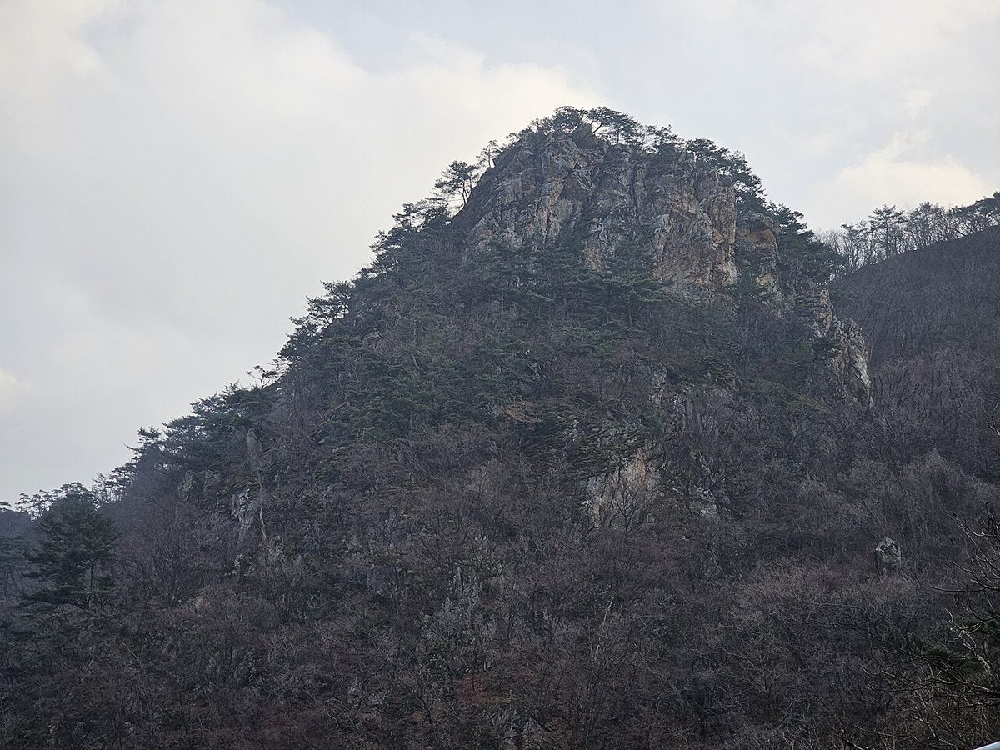
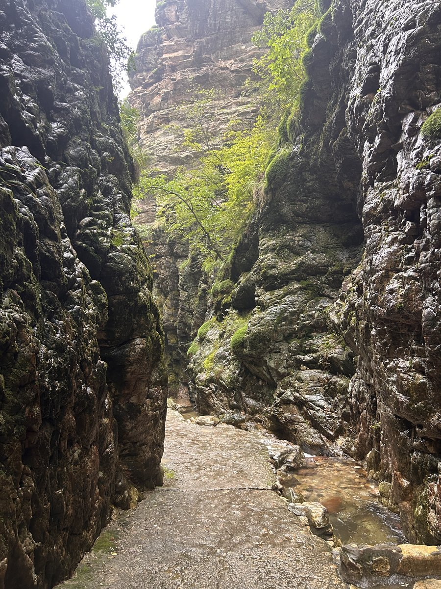
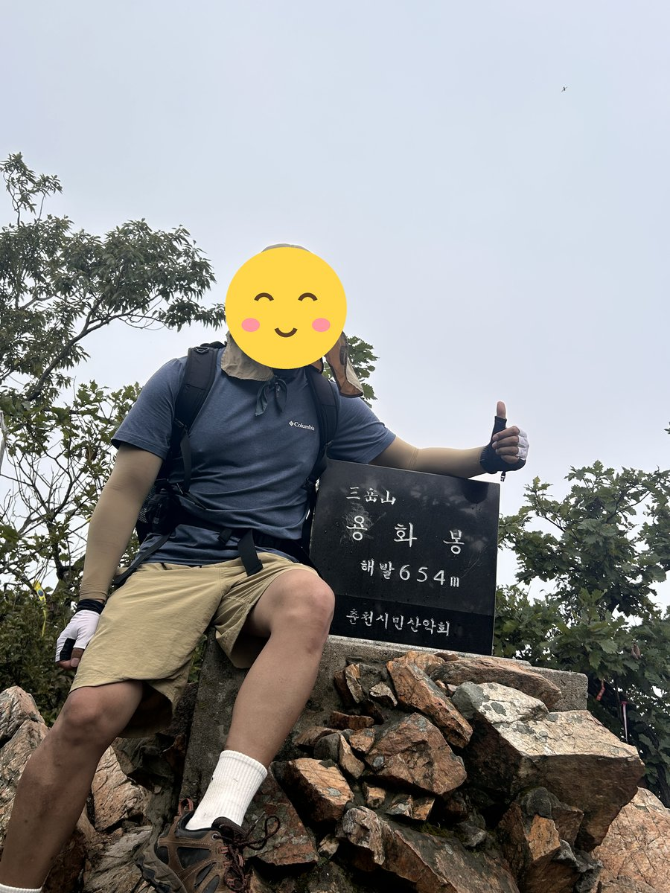
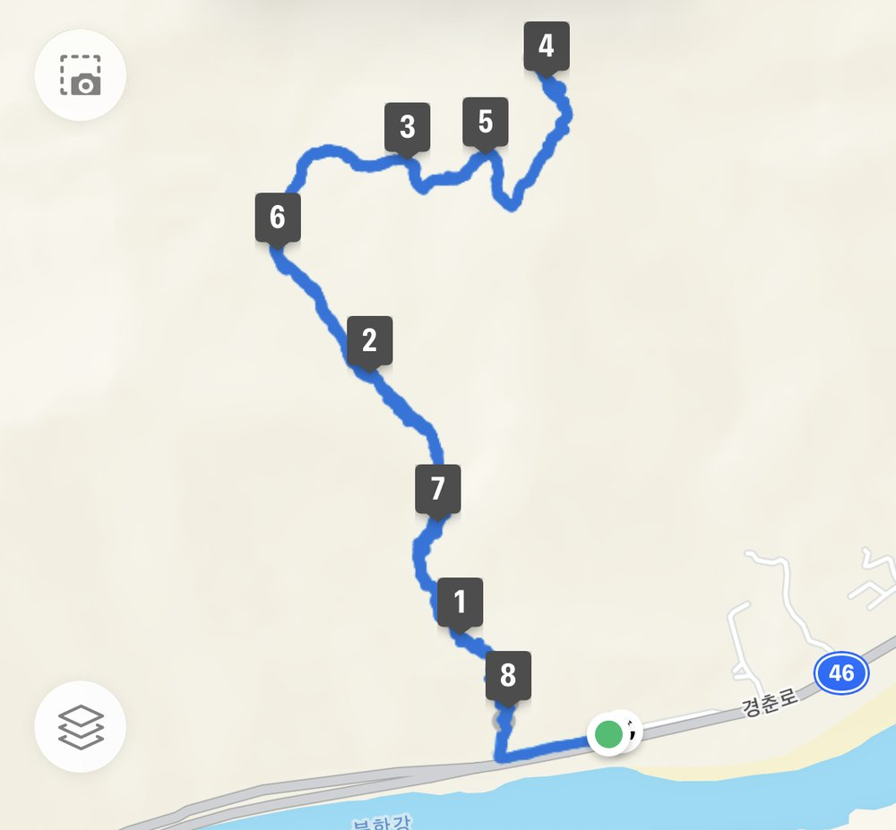

삼악산은 100대 명산 중에서도 부담이 적은 축입니다. 의암댐 매표소에서 정상 용화봉까지 3.9km, 2시간 남짓이면 닿습니다.
다만 짧다고 만만하지는 않습니다. 기암괴석으로 이루어진 산이라 철계단과 바위 구간이 이어지고, 특히 상원사를 지난 뒤로는 경사가 꽤 섭니다.
보상은 조망입니다. 정상에서 의암호와 북한강이 한눈에 들어오고, 하산길에 등선폭포 계곡을 지나며 물길을 따라 내려옵니다. 서울에서 당일로 다녀오기 좋은 산입니다.
등반기록
등선폭포 주차장 → 등선폭포 → 매표소 → 용화봉(정상) → 원점회귀
등선폭포 주차장에서 출발
등산 코스는 등선폭포 주차장 → 등선폭포 → 매표소 → 용화봉(정상) 원점회귀 코스.
시원한 물줄기와, 미로처럼 폭포를 따라 올라가는 계단길 사이로 보이는 뷰가 절경임.

용화봉 정상, 654m
아침 7시 53분에 출발해 2시간 만인 9시 53분쯤 정상 용화봉에 도착. 정상석 옆에서 인증샷을 남김.

올라온 길로 하산
올라온 길로 내려와 12시 12분에 마침. 총 8.48km, 4시간 19분이 걸림.
고도 상승은 앱 기록이 맞지 않아 GPS 기록으로 계산한 값임.

이 산의 포인트
- 용화봉(654m) 정상에서 보는 의암호·북한강 조망
- 등선폭포 — 하산길의 협곡과 연이은 폭포
- 철계단과 바위 구간이 이어지는 암릉
- 왕복 2~3시간의 짧은 코스
등산 코스
| 코스 | 거리 | 소요 | 난이도 |
|---|---|---|---|
| 의암댐 → 용화봉 → 등선폭포 의암댐 매표소 → 상원사 → 철계단 → 용화봉 → 흥국사 → 등선폭포 |
약 3.9km | 2시간 10분 | 중 |
| 강촌 → 등선봉 종주 강촌교 → 암릉 → 등선봉 → 619봉 → 흥국사 → 등선폭포 |
약 4.5km | 2시간 55분 | 중 |
| 등선폭포 왕복 (입문) 등선폭포 매표소 → 흥국사 → 정상 방면 |
약 3km | 1시간 30분 | 하 |
인증장소
정상인 용화봉 표지석 앞에서 인증합니다. 등선봉과 혼동하지 마세요.
가는 길
- 자가용
- 의암댐 매표소 또는 등선폭포 주차장을 이용합니다. 종주 시 차량 회수를 고려하세요.
- 대중교통
- 경춘선 강촌역에서 접근하기 좋습니다. 춘천 시내버스도 의암댐 방면으로 운행합니다.
주차장
- 의암매표소 주차장(등선폭포)강원 춘천시 서면 덕두원리
등선폭포 코스의 들머리입니다. 46번 국도변이라 진출입에 주의하세요.
- 상원사 주차장강원 춘천시 서면 덕두원리
정상까지 가장 짧지만 경사가 매우 급합니다.
주차 요금과 면수는 자주 바뀌고 성수기에는 임시 주차장·셔틀이 운영되기도 합니다. 출발 전에 지도 앱이나 공원 사무소로 한 번 더 확인하세요.
맛집
춘천은 닭갈비와 막국수의 도시입니다. 철판에 볶는 닭갈비가 대표이고, 메밀막국수와 감자옹심이가 함께 나옵니다. 등선폭포 입구에도 막국수 집이 여럿 있습니다.
- 삼대막국수들머리에서 4.6km강원특별자치도 춘천시 남춘로5번길 22
- 풍물옹심이칼국수들머리에서 4.8km강원특별자치도 춘천시 닥나무길9번길 5
- 명동산골닭갈비들머리에서 5.6km강원특별자치도 춘천시 금강로62번길 7
- 남부막국수본관들머리에서 4.8km강원특별자치도 춘천시 춘천로81번길 16
- 할매삼계탕들머리에서 3.6km강원특별자치도 춘천시 백석골길22번길 34
한국관광공사에 등록된 음식점입니다. 맛집 순위가 아니며, 영업시간과 휴무일은 바뀔 수 있으니 먼 길이라면 미리 전화해 보세요.
언제 가면 좋은가
봄가을이 가장 좋습니다. 여름에는 등선폭포 계곡이 시원하고, 겨울에는 철계단과 바위 구간 결빙에 주의해야 합니다.
알아두면 좋은 것
- 기차로 접근할 수 있어 대중교통 산행지로 인기가 높습니다.
- 철계단이 많아 비 온 뒤에는 미끄러움에 주의하세요.
- 의암댐에서 올라 등선폭포로 내려오는 방향이 조망과 계곡을 모두 챙기는 조합입니다.